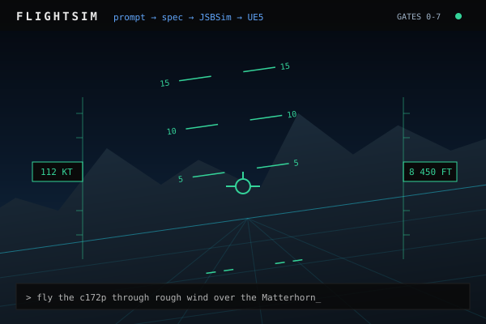
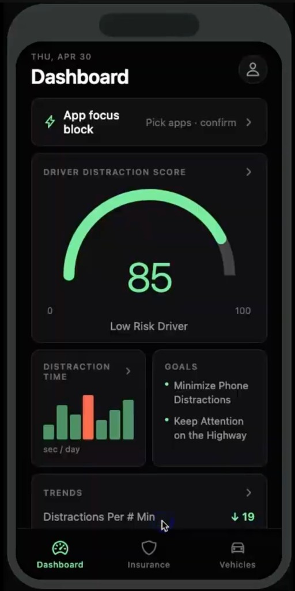
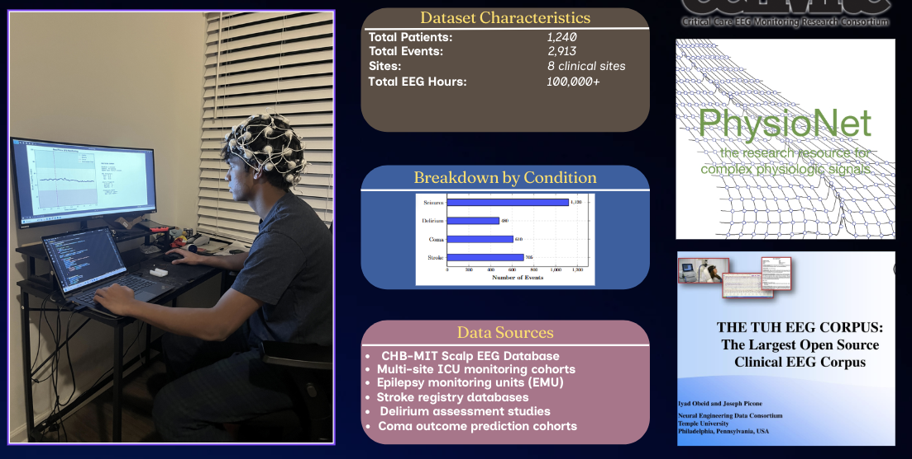
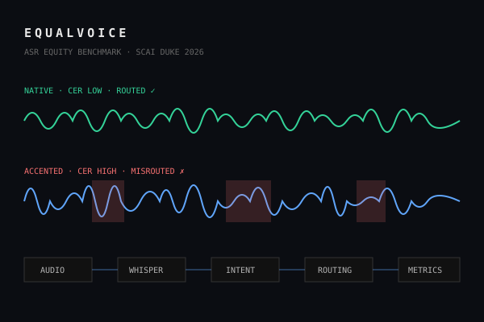

P R O J E C T S
Startups, research, and things I’ve built, newest first. Open [ MORE INFO ] on any project for the full story.

F L I G H T S I M
Solo build · Python · JSBSim · Unreal Engine 5
A research-grade flight simulator you drive with plain English. Type a scenario, get a validated, reproducible spec, then JSBSim physics and Unreal Engine 5 renders. Every claim is checked by measured gates.
[ MORE INFO ] ▼
Problem: Most sims give you either pretty pictures or trustworthy physics, rarely both, and setting up a scenario means hand-editing config files. Results are hard to reproduce and harder to defend.
How it works: A prompt like “fly the c172p through a tornado over the prairie” is compiled into a versioned scenario spec. Every field shows its provenance before anything runs, and impossible requests are refused by name instead of silently faked.
Physics: Headless JSBSim flight dynamics with full telemetry. Real terrain from the Copernicus DEM and historical weather from Open-Meteo. Winds, turbulence, storms, surfaces, and dates are all spec fields.
Rendering: Unreal Engine 5 host running the same JSBSim model through a patched plugin. Real aircraft meshes are fetched at pinned commits with licenses checked, and placeholder airframes never render.
Validation: Built in gated phases (0–7), every gate passing: trim hold, spec checks, control, null tests, terrain, sweeps. Gate 5 shows trajectory parity across both hosts to 1e-4 of tolerance. Gate 6 measures the visuals (haze, valley shadows, ground shadow, exposure) straight from the rendered pixels.
AI compiler: Works with zero setup through a rate-limited relay, with tiers for a free local model (Ollama), Groq, OpenRouter, or Anthropic. A deterministic parser covers the full vocabulary as an offline fallback.
Ships on: macOS, Linux, and Windows, with CI on all three. Web app on localhost, plus a one-command Windows deploy.
Python
JSBSim
Unreal Engine 5
C++
LLMs
FastAPI
GIS

C U B O
Founder · Hardware, AI & product
A teen-led driver-safety startup. A compact dash device uses edge AI to watch driver attention and alerts instantly when it spots distraction. Presented at CES at 15.
[ MORE INFO ] ▼
Problem: Distracted driving kills thousands of people every year, and teen drivers are hit hardest. Phone-based “safe driving” apps mostly score you after the trip. They don’t stop the glance in the moment.
Device: A small camera module on the dashboard runs computer vision on-device. Nothing has to be streamed to the cloud to raise an alert, so it stays fast and private.
Detection: The prototype detector combines MediaPipe Face Mesh head-pose (yaw/pitch/roll) with YOLOv8 phone detection. The key idea: holding a phone isn’t distraction, looking at it is. Frame-buffer smoothing cuts false alarms.
Status: Working prototype, companion app live on the web, and a public demo at CES. I was the youngest presenter in its history.
Edge AI
Hardware
Computer Vision
MediaPipe
YOLOv8
Startup

C U B O A P P
Co-built with the CUBO team · Expo / React Native Web
The CUBO companion app, now a full web app anyone can open: turn-by-turn maps, on-device attention monitoring, trip insights, family sharing, and a built-in voice assistant.
[ MORE INFO ] ▼
Maps & driving: Full-screen MapLibre GL maps (OpenFreeMap), address search with Photon, routing with OSRM. Route previews, maneuver instructions, speed, hazard reporting, and voice route requests.
Attention monitoring: MediaPipe Face Landmarker runs locally on camera frames to estimate head movement and eye closure. A guided parked calibration learns your baseline. Alerts only fire above 3 mph with fresh GPS, and missing data is reported, never counted as “attentive.”
Insights: Focus scores built from measured attentive driving time, trip summaries with route maps and attention markers, distraction trends, and goals.
Cubo Assistant: Account-aware answers, a spoken Voice Assist mode, and an optional general-AI mode running a Llama model in the browser via WebLLM/WebGPU, with no paid API needed.
Accounts & privacy: Firebase Auth + Firestore with owner-only sync rules. Camera frames are analyzed locally and never uploaded, and raw audio is never stored.
Earlier version: The original synced app (React Native + Expo) paired with the dash device for distraction scores, time tracking, and app focus-blocking. Demo on YouTube.
React Native
TypeScript
Expo
Firebase
MapLibre
MediaPipe
WebLLM

B R A I N W A V E S
Researcher · co-built with Weill Cornell faculty
3 novel interregional EEG signatures for early neurological decline. Connectivity-based machine learning that forecasts brain-state transitions, tested across 6 clinical EEG datasets.
[ MORE INFO ] ▼
Problem: Seizures strike in seconds. Clinicians see them on EEG only after onset. Region-by-region EEG prediction has plateaued.
Approach: Model the cross-regional connectivity, not the regions. Three novel interregional communication signatures emerged, each a potential early biomarker of neurological decline.
Build: BFI-Pipeline (Brain Fragility Index): raw EEG in, preprocessing and connectivity + band-power features out, then XGBoost and BiLSTM models forecasting brain-state transitions.
Results: Pre-seizure detection on CHB-MIT: 0.85 mean AUROC per patient after fine-tuning (24 patients, up from 0.77). On I-CARE ICU EEG: 0.996 AUROC for segment-level coma outcome and 0.999 for burst-suppression detection. Sleep-EDF wake vs. sleep: 0.92 AUROC.
Data: Multi-site clinical EEG: CHB-MIT, Siena, I-CARE, Sleep-EDF, TUH EEG Corpus, and PhysioNet. Epilepsy, ICU/coma, sleep, stroke, and delirium cohorts.
Team: Mentored by and co-built with professors at Weill Cornell Graduate School of Medical Sciences.
 In association with Weill Cornell Graduate School of Medical Sciences
In association with Weill Cornell Graduate School of Medical Sciences
EEG
XGBoost
BiLSTM
Signal Processing
Neurotech
Research
A L F R E D A I
Co-builder · Python · Claude API · Windows
“Every device, one butler.” A voice assistant that actually works inside your apps: it opens programs, clicks, types, and edits documents across your devices, with a real Windows installer.
[ MORE INFO ] ▼
Problem: Voice assistants can set timers but can’t do anything inside the apps you use. Screenshot-and-click agents are slow and fragile.
How it works: Alfred drives apps through Windows UI Automation (the same API screen readers use) and COM for Office. It doesn’t need to move your mouse, and it can work in several apps at once in the background.
Fallback: For apps those APIs can’t reach (games, canvases, custom UIs), it falls back to computer use: Claude reads screenshots and drives the real mouse and keyboard.
Speed: An intent router sends common commands down a ~50 ms no-LLM fast path, and only complex tasks go to the Claude orchestrator. The goal is spoken replies in under ~800 ms.
Architecture: A hub “brain” (voice gateway, device registry, memory, policy, audit log) connected to every device over an encrypted mesh. Windows first, then Macs, iPhones, and iPads.
Ships as: A desktop app with tray icon, a big STOP button, approvals, and an activity log, plus a no-admin Windows installer built by CI.
Python
Claude API
Computer Use
UI Automation
Voice AI
Windows

E Q U A L V O I C E
SCAI Duke 2026 Hackathon · team of 4
A benchmark for voice-AI bias. It measures how speech recognition fails accented speakers and how those errors cascade into misrouted support calls, lost time, and real dollars.
[ MORE INFO ] ▼
Inspiration: We come from immigrant families. Our parents regularly get stuck in automated phone systems that can’t understand accented speech. Those systems claim high accuracy but systematically fail people like them.
What it measures: Character/word error rate by accent group, intent-classification errors (misrouted calls), a Disparity Index between ESL and native speakers, and the downstream cost in time and money.
Pipeline: Audio → OpenAI Whisper → intent classifier → routing logic → metrics. Built on Mozilla Common Voice, with paths for CallHome and GLOBE.
Challenge: Massive audio data under tight compute limits: corrupted files, inconsistent labels, and benchmarks that had to be carefully controlled so they wouldn’t exaggerate or hide bias.
Python
Whisper
ASR
NLP
AI Fairness
Hugging Face

C A P T U R E S U C C E S S
Co-founder · Student startup network, NC Triangle
A student startup network in the Triangle. We run a free six-week accelerator at Frontier RTP that helps high schoolers turn ideas into real companies.
[ MORE INFO ] ▼
Why: Students build impressive things, but almost nothing is set up to help a teenager turn a project into a company: no cohort, no mentors, no demo day.
What we run: A free six-week accelerator with a cohort, partner network, mentorship, and company profiles. The Fall 2026 cohort is underway.
My role: Co-founded the network and helped build the accelerator program.
Site: Built with Next.js 16, React 19, and Tailwind v4. All content lives in one source-of-truth file.
Community
Accelerator
Startups
Next.js

C L O S E T C O M B O S
Founder · AI fashion app
An AI wardrobe app: upload your clothes and get outfit combinations from what you already own, plus recommendations for new pieces that actually match your closet.
[ MORE INFO ] ▼
Problem: Most people wear a small slice of their closet and buy clothes that don’t go with anything they own.
How it works: Photograph your clothes, and the app catalogs each item, then uses AI to generate outfit combinations from your real wardrobe.
Shopping: Recommends new items that fill gaps and pair with what you have, so you buy smarter instead of buying more.
Growth: Built an audience on TikTok at @closet_combos.
AI
JavaScript
Fashion
E-commerce
Other things I’ve built
A B O U T
Dhruva Valluru
Founder @ CUBO
AKA the youngest in CES history to present at the ripe age of 15 — I'm currently in North Carolina finishing high school while building CUBO, a driver-safety hardware startup using edge AI to reduce distracted driving.
In the past, I've spent time building EEG-based neurological prediction systems with Weill Cornell, a natural-language-driven flight simulator on JSBSim and Unreal Engine 5, low-cost hardware prototypes, and robotics projects. I also co-founded Capture Success to convince more students to build cool things.
I've recently become increasingly interested in doing cool AI stuff — especially where AI meets hardware, safety, research, and real-world products people can actually use.
Feel free to reach out about AI, startups, hardware, robotics, research, or anything interesting at dhruva.valluru@gmail.com